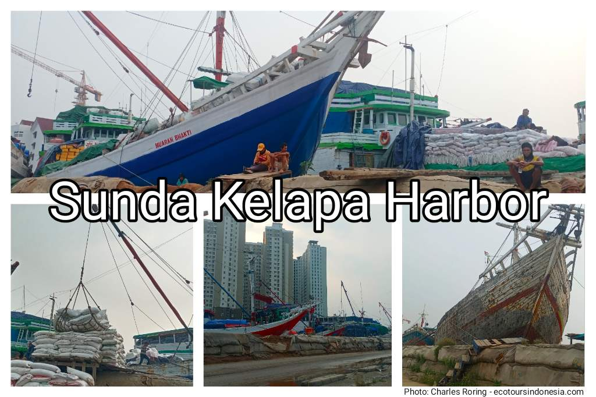
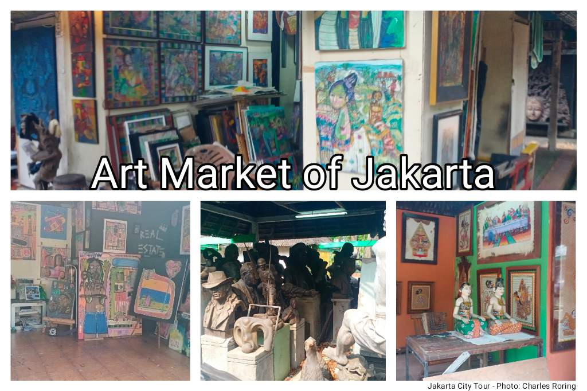
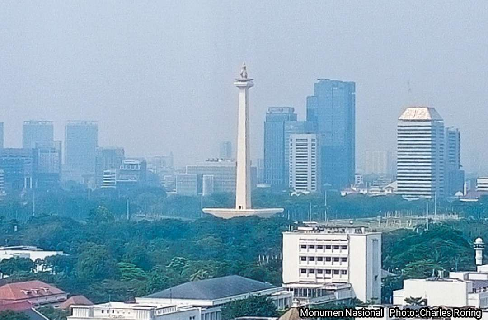

Jakarta is the capital city of Indonesia - the center of the administration of the government. It is also the busiest commercial hub of Indonesia. As a cosmopolitan city, Jakarta has got a population of nearly 11 million people.
Old City, Sunda Kelapa Harbor, Art Market
Every day international and domestic visitors go to Jakarta for various purposes. They come for business, study and governmental affairs, and holiday. Here are some interesting sites for anyone who is interested in exploring Jakarta:
Old City (locally called Kota Tua) is an old Dutch building complex that was the center of colonial government administration and trade. Visiting the Museum of History of Jakarta, visitors will be able to get brief description of how Jakarta was before, during and after the Dutch influence. The building was built from 1620-1627 by Governor General Jan Pieterszoon Coen. Other attractions in the Old City which visitors can see include Fine Art and Ceramic Museum, Puppet Museum, and Maritime Museum.
Sunda Kelapa Harbor
Sunda Kelapa Harbor is located in Penjaringan ward in the northern region of Jakarta. Visitors will be able to see traditional Phinisi cargo boats. Workers load and unload cargoes mechanically using winch and derrick boom or manually by carrying goods on their shoulders. The Sunda Kelapa harbor has existed since ancient times probably from the fifth century. Tome Pires, a Portuguese explorer in 1500s, wrote that Port of Sunda Kelapa was a very busy commercial hub. Boats from Java, Sumatra, Malaka, Sulawesi, Madura visited it transporting rice, pepper, animals, fruits, vegetables and gold.
Art Market of Jakarta
Art Market - This is a part of Ancol where visitors can see various kinds of artworks from artists of Indonesia including wood carvings, and paintings. Visitors will be able to see artists doing paintings in different art styles from realism, naturalism, contemporary and to modern ones. There are trees in this beautiful market. Visitors who are interested in birdwatching can watch birds in the area and the nearby ecopark of Jakarta.
The Miniature Park of Indonesia or locally called Taman Mini Indonesia Indah (TMII) exhibits the unique culture of provinces in Indonesia. By visiting it, visitors will be able to see various traditional houses, costumes, art, and dances that peoples of Indonesia.
Monumen Nasional
Monumen Nasional (MONAS) was built to commemorate the freedom fighters who struggled for the independence of Indonesia. The design of the monument follows lingam and yoni concept which is also relevant with the alu dan lesung (meaning pestle and mortar) that has been used for centuries by farmers of Indonesia to separate rice from its husk which symbolizes prosperity for the whole peoples of Indonesia.
Bird Park - The trip to this place is suitable for visitors who are interested in birding. There are hundreds of species of birds that are grouped according to their range of occurance in the archipelago. By visiting this place we have a brief look about the wealth of the biodiversity of avifauna of Indonesia.
National Gallery contains more than 2,000 pieces of artworks from Indonesian artists. Exhibitions are related to various themes including independence day, flora and fauna as well as cultural attractions of the many tribes of Indonesia.
If you are a bookaholic, visiting a national library is a perfect choice. You can see a lot of books about Indonesia that are interesting. There are also books about science, nature, and culture.
Freedom Library - Still about books, this library is located in Rasuna Said
Seribu Islands are located in the northern waters of Jakarta city. Visitors can enjoy snorkeling and nature by visiting Coconut island, Pramuka Island, and etc. Birdwatching can also be done along.the coastal area to see island and sea birds.
Maritime Museum is the place to go if you are a person who is interested in knowing the maritime history and tradition of the Indonesian people. As the largest archipelago in the world, Indonesian has got a very diverse and rich maritime traditions.
and etc...
For further info, please, contact me (Charles Roring) by email to: peace4wp@gmail.com or by whatsapp to: +6281332245180